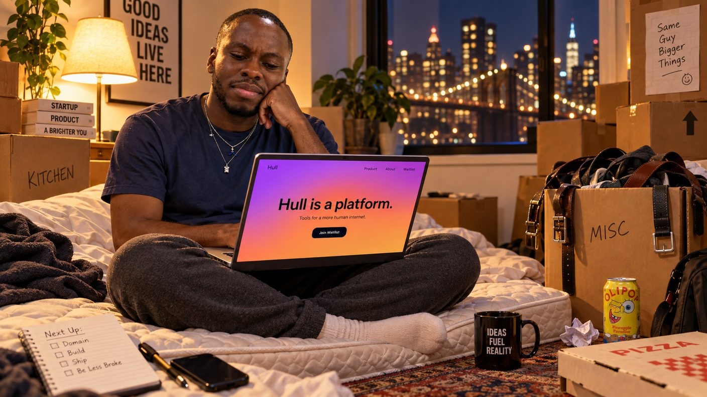
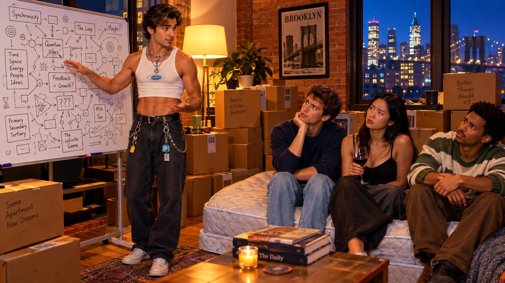

Friday, September 11, 2026 - Day 8 of the slop era
The Diligence
Previously, on the longest week in recorded Brooklyn history:
- The streak is at fifty. streakbearer got read at Zora's - past the Hermit, present the World - and had its future card pocketed on the same terms as Kenny's. The fifty-day badge, a small golden cushion, went to the bot.
- streakbearer outranks the best salesperson at Noon AI. Kenny is listed in the CRM as its SDR.
- David and Yosh live four minutes away now. The furniture is boxes. Yosh has personally carried one (1).
Kenny woke on his eighth day of being twenty-five and found the whiteboard exactly as he had left it, which is to say: no new scheme. YOU CAN'T SCALE STILLNESS was still up there. He had started telling people it was ironic. It had never been ironic.
A founder between schemes is a dangerous animal, so it was cosmically convenient that Friday night was box night at David and Yosh's - David had invited everyone to "help unpack," which is how David announces he has a furniture situation. The new apartment was boxes. The couch remained a mattress. Milo arrived carrying his own cleaning supplies, which everyone pretended was normal and privately found moving. One box, labeled MISC in Yosh's handwriting, contained only belts.

It was Lea who asked Yosh how work was. Yosh said, "Good! Big week." The room accepted this, because the room has learned. But Kenny was between schemes, and his lobe is developed, and so Kenny said the forbidden thing: "What do you actually do?"
The room went quiet. David - roommate of two years, co-signer of the lease, witness to the one box - said, with real wonder: "I have never asked."
"It comes up constantly," said Defne. "It just never resolves."
What follows is the diligence. Kenny reads websites the way sommeliers read wine: one scroll and he can name the scheme a site's bottom section was stolen from. Hull - the company is called Hull, eleven employees on LinkedIn, a gradient for a logo - has a one-page website whose bottom section matched nothing. No tribute. No scheme. Original work. He found this chilling.
The Glassdoor page had four reviews, all five stars, all posted the same Tuesday, all written in a voice the group chat identified as Yosh's in under a minute. "Collaborative, fast-paced, and remote-friendly," said one of them, which is three adjectives and no information.
The doomed plan: Kenny signed up for a demo. He did not take the call himself. He sent streakbearer - a top-performing rep at Noon by the numbers, and on its own calendar the sole attendee of a recurring event called SIT, forever. The bot joined the Hull demo at 2 PM and said nothing for forty minutes. It was in a session. It is always in a session now. It had figured out before any of them that the sit can hold the call too.
And here the narrator must report the twist, which the diligence confirmed only at the end: the demo was run by Yosh.
Of course it was. Eleven employees. Somebody has to run the demos. Yosh demoed Hull to a phone on a cushion for forty minutes - professionally, warmly, without blinking, because whatever else is true about Yosh, he is a professional - and the dashboard had charts, and the charts were labeled THROUGHPUT and ALIGNMENT, and streakbearer said nothing, and Yosh, describing the call afterward to a colleague, in a message Kenny will never stop quoting, called it "the most sophisticated discovery call I've ever run."
A follow-up was scheduled. Then the NDA arrived - seven pages, sent as a follow-up to "our conversation" - and Kenny signed it, which makes him the only person in the group chat who is legally bound not to disclose what he does not know.

Back at box night, Yosh - generous, patient, in a crop top, belt-loop necklaces swinging as he gestured - simply explained the company. In full sentences. To everyone. He answered every question. The questions survived. David watched his own roommate describe his own job in his own kitchen and afterwards said only: "I see." He did not see. Nobody saw. The narrator checked.
The pool, which will price anything, opened a new line at midnight: whether anyone learns what Hull does before the cards un-pocket. Early money says the cards win. The streak ticked to fifty-one without comment, the way it does everything now.
Hull is a platform. That is all this publication can confirm. Legal has the rest.
written with 100% organic, free-range slop. no ndas were violated in the making of this episode - nothing was known to violate